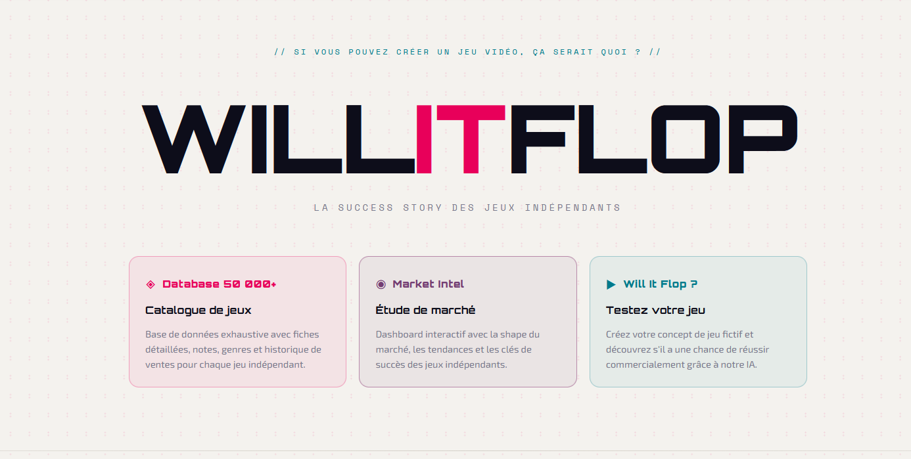
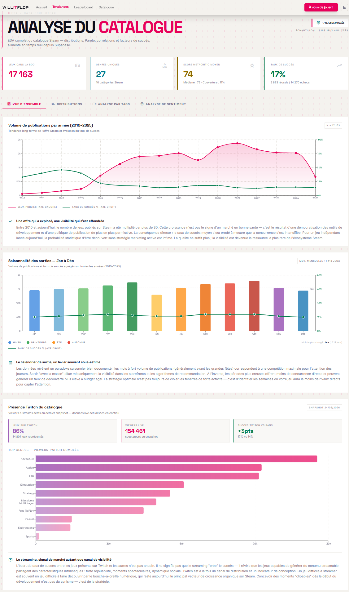
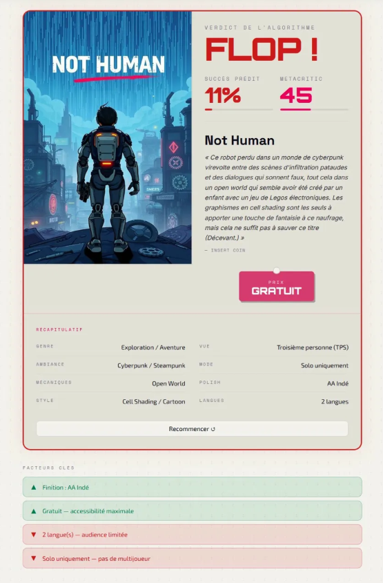
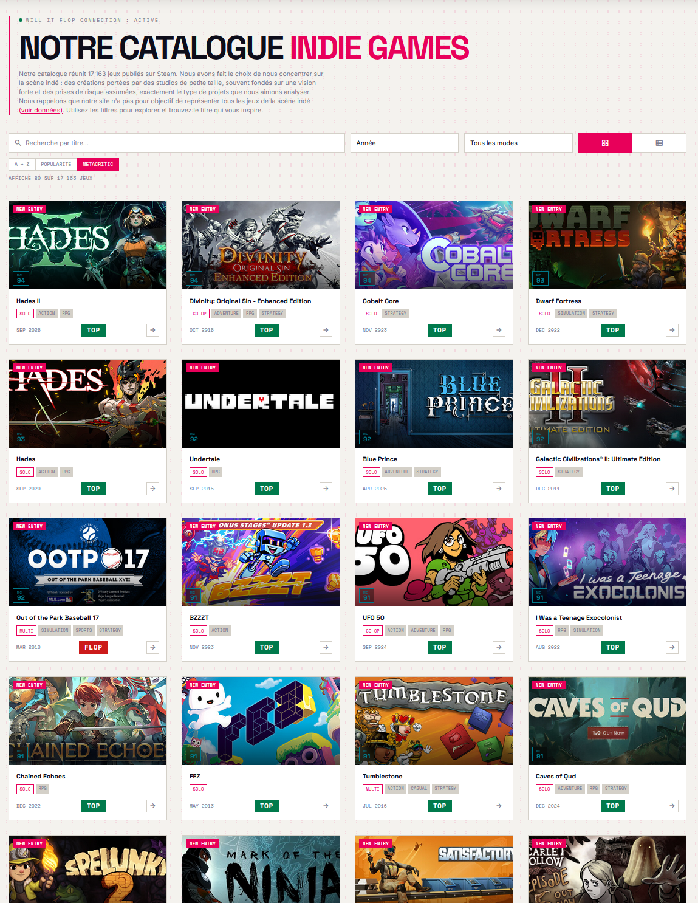

WillItFlop
Application full-stack de prédiction du succès commercial des jeux indépendants Steam. Pipeline ETL automatisé (Prefect), modèle XGBoost entraîné sur 13 600+ jeux, API FastAPI et interface React interactive.

Page d'accueil — WillItFlop, déployée sur Vercel
Pipeline ETL automatisé avec Prefect
La pipeline collecte les données depuis 3 APIs (Steam, SteamSpy, Twitch), nettoie et transforme les prix, textes et KPIs, puis alimente une base PostgreSQL. L'orchestration est assurée par Prefect Cloud, déclenchée hebdomadairement via GitHub Actions. dbt reconstruit ensuite les tables de features pour le ML et les marts d'analyse de sentiment.

Dashboard Market Intelligence — analyse du catalogue Steam avec KPIs en temps réel
XGBoost classifier — prédiction de succès commercial

Le modèle combine 5 types de features pour prédire si un jeu indépendant sera un succès commercial (top 17% par estimation d'owners).
- Numérique — prix (log-transformé), nombre d'achievements, langues supportées
- Booléen — gratuit, accès anticipé
- Multi-label (MLB) — tags ×3, genres ×2, catégories ×2 (pondération par répétition de colonnes pour colsample_bytree)
- Texte (TF-IDF) — description nettoyée, 200 features
- Sample weighting — pondération par ancienneté du jeu (les jeux récents ont des labels moins fiables)
Le seuil de décision (0.57) est optimisé sur le F1-score.
Le scale_pos_weight est calculé dynamiquement pour gérer le déséquilibre
de classes (17% positifs / 83% négatifs).
React + FastAPI — application interactive déployée
L'application combine une API FastAPI (Render) avec un frontend React 19 (Vercel). 6 pages : accueil avec prédiction interactive, dashboard Market Intelligence, catalogue de 17 000+ jeux avec recherche et filtres, fiches détaillées avec screenshots et trailers, leaderboard top/flop, et même un mini-jeu. La traduction FR est assurée par DeepL via un proxy API.

Catalogue de 17 000+ jeux indépendants — recherche, filtres, tri par Metacritic/popularité
🎮 Prédiction ML
Créez un concept de jeu fictif et obtenez un verdict Top ou Flop avec score de confiance, une jaquette générée par Pollinations.ai et une fausse review presse rédigée par Groq (Llama 3)
📊 Market Intelligence
Dashboard analytique : volume, saisonnalité, genres, Twitch, sentiment
🗂️ Catalogue 17K+
Base de données avec fiches détaillées, screenshots, trailers HLS
🏆 Leaderboard
Classement des plus gros succès et des plus gros flops
🌐 Traduction DeepL
Proxy API pour traduction EN→FR des descriptions et reviews
🎰 Mini-jeux
Quiz, slot machine et jeux interactifs pour explorer les données
Technologies utilisées
8 technologies clés couvrant l'ensemble de l'architecture.
Stack complète — du scraping au déploiement
Architecture découplée multi-cloud : chaque composant est déployé indépendamment et communique via des interfaces standardisées.
Résultats & apprentissages
Un projet end-to-end complet, du scraping à l'application en production multi-cloud.
Pipeline production
ETL hebdomadaire orchestré par Prefect Cloud, déclenché par GitHub Actions. 5 étapes avec retry et monitoring.
ML en CI/CD
Le modèle se ré-entraîne automatiquement quand les features ou la config changent. Artifacts auto-commités par GitHub Actions.
Déploiement multi-cloud
Frontend sur Vercel, API sur Render, DB sur Supabase, orchestration sur Prefect Cloud. Architecture découplée et scalable.